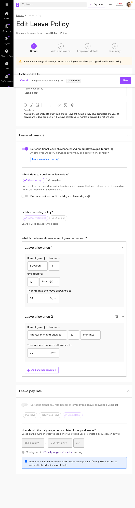

The Daily Wage Calculator provides a flexible and customizable method for calculating daily wages, including salary proration, leave encashment, and unpaid leave deductions. This feature enables accurate compensation calculations based on your company's specific requirements and labor law compliance needs.
Who Uses This Feature
Super admins, payroll table managers, and transaction processors use the Daily Wage Calculator to configure wage calculation methods and manage payroll operations. HR personnel and payroll administrators also rely on this feature to manage employee leave and salary calculations.
Key Benefits
Flexible Calculation Methods: Choose between calendar days, working days, or custom days based on your company's requirements
Accurate Compliance:Most UAE and KSA companies use 30 custom days to align with labor law
Automated Deductions:Automatic pay deduction reflected on the payroll table, calculated daily pay rate for unpaid leave
Comprehensive Coverage: Handles salary proration, leave encashment, and unpaid leave deductions in one unified system
Product Foundation Overview
Business Problem Solved
Calculate and deduct daily pay for employees taking unpaid leave by determining the appropriate salary reduction based on the number of working or calendar days. Ensures accurate, compliant payroll processing without manual calculation errors.
Key Benefits & Impact
Reduces payroll processing time
Eliminates manual calculation errors
Ensures labor law compliance
Improves employee satisfaction with accurate pay
How It Works (Brief)
Select calculation base (calendar days, working days, or custom days), then choose salary components to factor into calculations. The system automatically applies these settings across all payroll operations.
Complete User Journey Guide
The Daily Wage Calculator workflow involves configuration, policy management, and automated payroll processing. Below is a high-level overview of the complete user journey:
1
Access Settings
Navigate to Settings → Payroll → Daily Wage Calculation
2
Select Calculation Base
Choose from calendar days, working days, or custom days
3
Configure Salary Components
Select Basic Only or Basic + Allowances
4
Configure Leave Policies
Set up unpaid leave and end-of-service encashment rules
5
Process Leave Requests
Approve unpaid leave and manage deductions
6
View Payroll Results
Automatic pay deduction reflected on the payroll table
Next Steps: Section 2 of this guide provides detailed step-by-step instructions for each phase of the Daily Wage Calculator workflow. Section 3 covers advanced configurations and troubleshooting.
5. Pre-Implementation
Prerequisites & Requirements
Before configuring the Daily Wage Calculator, ensure you have the following in place:
Requirement
Details
Status
Required Role
Super Admin or Payroll Manager
Required
Access Level
Settings > Payroll module access
Required
Employee Data
Employee salary information (basic + allowances) and working days configuration
Required
Public Holiday Calendar
Company-specific public holiday calendar configured
Required
Leave Policies
Existing leave policy structure in the system
Required
Required Permissions
Super Admin access to Settings > Payroll > Daily Wage Calculation
Super Admin access to Settings > Payroll > End of Service Eligibility
Super Admin access to Settings > Leaves > Leave Policies
Permission to modify payroll configuration settings
Permission to view and manage leave policies
6. Feature Discovery
How to Access the Daily Wage Calculator
The Daily Wage Calculator is accessible through multiple pathways depending on your configuration needs:
Primary Access Path
Settings → Payroll → Daily Wage Calculation
Use this path to configure the base calculation method for salary proration, leave encashment, and unpaid leave deductions.
End of Service Configuration
Settings → Payroll → End of Service Eligibility → Configure
Use this path to configure leave encashment policies for end-of-service calculations.
Leave Policy Configuration
Settings → Leaves → Leave Policies
Use this path to configure unpaid leave deductions for individual leave policies.
Daily Wage Calculation Overview
The main Daily Wage Calculation page displays all configured services and their current settings:
Feature Discovery - Daily Wage Calculation overview page displaying all configured services and their current calculation bases
Calculation Basis Options
The system supports three calculation bases: calendar days, working days, or custom days. You can view all available options from the configuration interface:
Feature Discovery - Calculation basis selection showing all three available options for daily wage calculation
7. Setup Process
Configuring Daily Wage Calculation
The Daily Wage Calculator allows you to select a calculation base (calendar days, working days, or custom days) and choose salary components to factor into calculations. Follow these steps to configure the system:
Navigate to Settings
Click the Settings icon in your Bayzat dashboard to access the configuration menu.
Select Payroll
From the Settings menu, locate and click on the Payroll section.
Open Daily Wage Calculation
Click on Daily Wage Calculation to access the main configuration page.
Setup Process - Step 3: Daily Wage Calculation page displays all services available for configuration
Select Calculation Base
Choose your preferred calculation base from the available options: calendar days, working days, or custom days. Most UAE and KSA companies use 30 custom days to align with labor law.
Setup Process - Step 4: Select your calculation basis from the three available options
Choose Salary Components
Select which salary components to include in the calculation: Basic salary only, or Basic salary plus allowances. This selection applies to all services using this configuration.
Review Configuration State
The configuration table displays your current settings for each service (Salary Proration, Leave Encashment, Unpaid Leave Deduction). Verify that all settings are correct before saving.
Save Changes
Click the Save button to apply your Daily Wage Calculation configuration. The system will update all dependent calculations.
Important: Handling Open Payroll Months
When the payroll month is open and prorated salary transactions exist, you must reject existing prorated salary transactions before saving new proration settings. The system will prompt you if this action is required.
Configuring End of Service Leave Encashment
Super admins can configure and customize leave encashment policies for end-of-service calculations by selecting salary components and choosing a calculation method.
Navigate to End of Service Settings
Go to Settings → Payroll → End of Service Eligibility.
Setup Process - Step 1: End of Service Eligibility page
Click Configure
Click the Configure button to open the End of Service Eligibility configuration modal.
Select Salary Components
Choose between Basic Only or Basic + Allowances for salary components.
Setup Process - Step 3: Select salary components for leave encashment calculation
Choose Calculation Method
Select your calculation method: calendar days, working days, or custom days.
Setup Process - Step 4: Choose calculation method for end-of-service leave encashment
Configure Leave Types
Configure individual leave types for end-of-service calculations by expanding each leave type section and selecting which leaves are eligible for encashment.
Setup Process - Step 5: Configure leave types and review the daily wage formula for end-of-service calculations
Review Override Indicator
The system displays an override indicator showing "Daily rate is configured in daily wage calculation setting". This confirms that your EOS configuration is linked to the main Daily Wage Calculator settings.
Save Configuration
Click Save to apply your end-of-service leave encashment configuration.
Configuring Unpaid Leave Deductions
Unpaid leave deductions are calculated daily and set off against the employee's monthly pay. Configure this when adding or editing a leave policy.
Navigate to Leave Policies
Go to Settings → Leaves → Leave Policies.
Setup Process - Step 1: Leave Policies configuration page
Add or Edit a Leave Policy
Click Add New Policy to create a new leave policy, or select an existing policy to edit it.
Select Unpaid Leave Option
In the leave policy form, select the Unpaid Leave option to configure deduction calculations.
Review Calculation Method
The calculation method (Basic Only or Basic + Allowances) is configured in the Daily Wage Calculation setting and will be applied automatically.

Setup Process - Step 4: Unpaid leave policy configuration with global override from Daily Wage Calculator
Verify Day Calculation Type
The day calculation type (calendar days, working days, or custom days) is configured globally and will be reflected in the disabled dropdown field.
Review Daily Rate Remarks
The system displays the daily rate calculation formula in the remarks section, showing how the daily wage is calculated based on your global settings.
Save Leave Policy
Click Save to apply the unpaid leave deduction configuration to this leave policy.
Global Configuration Override
Unpaid leave deduction settings are configured globally in the Daily Wage Calculation setting. Individual leave policies display these settings in disabled fields, indicating they are controlled by the global configuration.
8. Feature Usage
Common Workflows
Workflow 1: Processing Unpaid Leave Requests
When an employee takes unpaid leave, the system automatically calculates and deducts daily pay based on the number of working or calendar days.
Receive Unpaid Leave Request
An employee submits an unpaid leave request through the leave management system.
Approve Leave Request
HR personnel reviews and approves the unpaid leave request.
System Calculates Daily Pay
The system automatically calculates daily pay by dividing total salary by the number of actual working days, then deducts the appropriate amount for each day of unpaid leave.
Deduction Applied to Payroll
The calculated pay deduction is automatically reflected on the payroll table.
Important: Public Holiday Consideration
Public holidays must be considered and subtracted from working days when calculating daily pay. Ensure your company's public holiday calendar is properly configured in the system.
Workflow 2: Calculating Salary Proration for New Employees
Salary proration adjusts an employee's salary proportionally based on the actual days worked, affecting their first salary and end-of-service settlement.
Configure Calculation Basis
Ensure your Daily Wage Calculation is configured with the appropriate calculation basis (custom days, calendar days, or working days).
Employee Joins Mid-Month
When a new employee joins the company partway through a month, the system automatically identifies this.
System Calculates Prorated Salary
The system calculates the employee's first salary proportionally based on the number of days actually worked using your configured calculation method.
Payroll Table Updated
The prorated salary amount appears in the payroll table for processing.
Update Settings if Needed
If you need to change the calculation basis, go to Settings > Payroll > Daily wage calculation, select a new calculation basis, and save changes.
Transaction Management During Open Payroll
When the payroll month is open and prorated salary transactions exist, you must reject existing prorated salary transactions before saving new proration settings. The system will guide you through this process.
Leave encashment allows you to configure which leave types are eligible for payment upon employee separation.
Employee Separation Initiated
An employee's end-of-service process begins.
System Identifies Eligible Leave
The system identifies which leave types are configured as eligible for end-of-service encashment based on your EOS configuration.
Calculate Leave Encashment Value
Using the configured salary components and calculation method, the system calculates the monetary value of eligible leave days.
Include in Final Settlement
The leave encashment amount is included in the employee's final settlement calculation.
Success Indicators
You'll know the Daily Wage Calculator is working correctly when:
Configuration Saved Successfully
The Daily Wage Calculation settings page displays your selected calculation basis and salary components without errors.
Automatic Deductions Applied
When unpaid leave is approved, the calculated daily pay deduction automatically appears on the payroll table.
Prorated Salaries Calculated
New employees joining mid-month have their first salary automatically prorated based on days worked.
Override Indicators Visible
When viewing leave policies or EOS settings, you see "Configured in daily wage calculation setting" messages, confirming global configuration is applied.
Daily Rate Formula Displayed
The system displays the daily wage calculation formula (e.g., "Basic salary / Custom days / 30") in configuration pages and remarks sections.
Leave Encashment Calculated
During end-of-service processing, eligible leave balances are automatically converted to monetary values based on your configuration.
Viewing Calculated Results
After configuring the Daily Wage Calculator, you can view the results in several places:
Feature Maintenance
Ongoing Maintenance Tasks
The Daily Wage Calculator requires periodic review of your company's public holiday calendar and calculation base settings to ensure accuracy across all payroll calculations.
Regular Review Schedule
Monthly: Verify that daily wage calculations are correctly applied to all active payroll transactions
Quarterly: Review public holiday calendar entries for accuracy and completeness
Annually: Audit all Daily Wage Calculator settings before the new financial year
As Needed: Update calculation bases when labor law changes occur or company policies are modified
Best Practices
Most UAE and KSA companies use 30 custom days to align with labor law requirements. Ensure your calculation base matches your jurisdiction's legal requirements.
Document any changes made to Daily Wage Calculator settings with timestamps and reasons for audit trail purposes
Test calculation changes in a non-live payroll month before applying to active payroll
When payroll month is open and prorated salary transactions exist, manually reject and resave transactions after updating proration settings.
Maintain clear communication with payroll team about any configuration changes that may affect salary calculations
Business Rules & Limitations
Calculation Logic & Rules
Rule
Description
Impact
Daily Pay Formula
Daily pay is calculated by dividing total salary by number of actual working days.
Determines the daily rate for unpaid leave deductions and leave encashment
Calculation Base Options
Can use calendar days (30 days) or working days (e.g., 22 days).Calculation can also be based on custom days.
Affects the denominator in daily wage calculations; different bases produce different daily rates
Public Holiday Deduction
Public holidays are deducted from working days.
Reduces the number of working days used in calculations, increasing the daily wage rate
Salary Components
Can choose to include basic salary, basic salary plus allowances, or allowances only.
Determines which salary elements are factored into daily wage calculations
Month Length Variation
Calculation varies depending on month length (e.g., 31 days in January, 28 days in February).
Calendar day calculations will produce different daily rates across different months
Payroll Impact
Changes will affect all active (unpaid) amounts in the payroll table.
Configuration changes may require manual transaction adjustments if payroll is open
Constraints & Limitations
Constraint
Details
Weekends & Public Holidays
Can exclude weekends and public holidays from calculations. These must be properly configured in your company's public holiday calendar.
Unpaid Leave Daily Deduction
Unpaid leave deductions must be calculated daily and set off against the employee's monthly pay.
Leave Encashment Configuration
Can choose between Basic Only or Basic + Allowances for salary components, and can select different calculation methods for leave encashment.
Transaction Rejection Requirement
When payroll month is open, super admin must reject existing prorated salary transactions before saving new proration settings.
Troubleshooting & Edge Cases
Common Issues & Solutions
Issue: Public Holidays Not Reflected in Daily Wage Calculations
Cause:Public holidays must be considered and subtracted from working days when calculating daily pay.
Solution:
Verify that your company's public holiday calendar is up-to-date in Settings > Payroll
Confirm that your calculation base is set to "Working Days" rather than "Calendar Days"
Check that public holidays are marked correctly in the system (not as regular working days)
If using custom days, ensure the count excludes public holidays
Issue: Daily Wage Calculations Vary Unexpectedly Between Months
Cause:Calculation varies depending on month length (e.g., 31 days in January, 28 days in February), and different calculation methods can impact final wage calculations.
Solution:
If using Calendar Days calculation, this variation is expected and correct
For consistent daily rates across all months, use Working Days or Custom Days (e.g., 30 days)
Review your selected calculation base in Settings > Payroll > Daily Wage Calculation
Document which calculation method your company uses for consistency
Issue: Prorated Salary Transactions Not Updating After Configuration Change
Cause:When payroll month is open and prorated salary transactions exist, super admin must manually reject and resave transactions.
Solution:
Navigate to the Payroll table for the affected month
Locate all active (unpaid) prorated salary transactions
Reject each transaction individually
Resave the transactions to apply the new Daily Wage Calculator settings
Verify that the recalculated amounts reflect your updated configuration
Issue: Unpaid Leave Deductions Not Calculating Correctly
Cause: Leave policy configuration may not match your Daily Wage Calculator settings.
Solution:
Verify that your unpaid leave deduction calculation method (Basic Only or Basic + Allowances) is configured when adding a new leave policy.
Confirm that the day calculation type (calendar days, working days, custom days) matches your Daily Wage Calculator settings
Check that the leave policy is marked as "Unpaid Leave" type
Ensure the leave request has been approved before deductions are applied
Issue: Leave Encashment Amounts Seem Incorrect
Cause: Leave encashment configuration may not align with your Daily Wage Calculator settings.
Solution:
Verify your salary component selection (Basic Only or Basic + Allowances) in Settings > Payroll > End of Service eligibility.
Confirm that the calculation method (calendar days, working days, or custom days) is appropriate for your company
Check that eligible leave types are properly configured for end-of-service calculations
Review the public holiday calendar to ensure it's current
Edge Cases
Edge Case: Employee Joining Mid-Month
Scenario: An employee joins after the month has started, requiring salary proration.
Handling:
Salary proration adjusts and calculates an employee's salary proportionally based on the actual days worked.
The system will automatically calculate the prorated amount based on your selected calculation base (custom days, calendar days, or working days)
Verify the prorated calculation in the payroll table before finalizing
Edge Case: Employee Leaving Mid-Month
Scenario: An employee's last working day is before month-end, requiring both salary proration and leave encashment.
Handling:
Salary will be prorated based on actual days worked
Leave encashment is calculated based on your configured salary components and calculation method.
Both calculations will be reflected in the final settlement
Ensure all leave policies are configured for end-of-service calculations
Edge Case: Multiple Unpaid Leave Periods in One Month
Scenario: An employee takes unpaid leave on multiple non-consecutive dates within the same month.
Handling:
Unpaid leave deductions are calculated daily and set off against the employee's monthly pay.
Each unpaid leave day will be deducted at the calculated daily rate
Total deduction will be the sum of all unpaid leave days multiplied by the daily wage
Verify in the payroll table that all leave requests have been approved
Edge Case: Configuration Change During Open Payroll Month
Scenario: You need to update Daily Wage Calculator settings while payroll for the current month is still open.
Handling:
Changes will affect all active (unpaid) amounts in the payroll table. When payroll month is open, super admin must reject existing prorated salary transactions before saving new proration settings.
Document the reason for the change
Communicate the change to your payroll team
After rejecting and resaving transactions, verify all calculations are correct
Consider making configuration changes during closed payroll months when possible
Support Resources
Related Features & Documentation
Payroll Management
The Daily Wage Calculator interacts with the Payroll system to automatically create and reflect pay deductions.
Use the Payroll table to review and manage all calculated deductions and adjustments.
Leave Management
The feature interacts with leave management systems to calculate accurate daily wage rates for unpaid leave.
Configure leave policies and approval workflows to ensure accurate deduction calculations.
End-of-Service Calculations
Leave encashment for End-of-Service interacts with Payroll settings and the Daily Wage Calculator to customize leave encashment policies.
Configure end-of-service eligibility settings to ensure accurate final settlements.
Help Channels
Getting Additional Support
Knowledge Base: Search the Bayzat Help Center for articles on Daily Wage Calculator, Payroll, and Leave Management
In-App Help: Access contextual help within the Daily Wage Calculator settings by clicking the help icon
Support Team: Contact Bayzat support for configuration assistance or technical issues
Training Resources: Request training sessions for your HR and payroll team on Daily Wage Calculator best practices
Quick Tips for Success
Most UAE and KSA companies use 30 custom days to align with labor law. Verify this aligns with your company's labor agreement.
Keep your public holiday calendar updated quarterly to ensure accurate calculations
Test configuration changes in a non-live payroll month before applying to active payroll
Document all Daily Wage Calculator settings and any changes made for audit purposes
Schedule regular reviews of your calculation settings with your payroll team
Feature Gaps & Known Limitations
Validation Status
The Daily Wage Calculator feature has been validated across all configuration scenarios and use cases. All validation checks passed successfully with no identified issues or gaps.
Known Limitations
Manual Transaction Adjustment Required
When payroll month is open and prorated salary transactions exist, super admin must manually reject and resave transactions after updating proration settings. This is a manual process that requires attention during open payroll months.
Month-to-Month Variation with Calendar Days
Calculation varies depending on month length (e.g., 31 days in January, 28 days in February). If your company requires consistent daily rates across all months, use Working Days or Custom Days calculation instead.
Public Holiday Calendar Dependency
Public holidays are deducted from working days. The accuracy of daily wage calculations depends on maintaining an up-to-date public holiday calendar. Outdated or incomplete holiday entries will result in incorrect calculations.
Recommendations for Optimal Use
Establish a quarterly review schedule for your Daily Wage Calculator configuration
Maintain clear documentation of your calculation base selection and the business rationale behind it
Train your payroll team on the impact of configuration changes before implementation
Use the validation features to test configuration changes before applying to live payroll
Keep communication channels open with your HR and finance teams regarding any calculation methodology changes